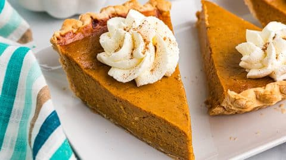

Pumpkin Pie

Description
Truly a seasonal favorite, this delicious recipe for pumpkin pie will be sure to please everybody for the holidays!
Ingredients
- 1 can of pumpkin puree
- 1 can of sweetened condensed milk
- 2 large eggs
- 1 teaspoon ground cinnamon
- 1/2 teaspoon ground ginger
- 1/2 teaspoon ground nutmeg
- 1/2 teaspoon salt
- 1 unbaked pie crust
Steps and Directions
- Gather required ingredients and preheat the oven to 425 degrees F (or about 220 degrees C)
- Whisk pumpkin puree, condensed milk, eggs, cinnamon, ginger, nutmeg, and salt together in a medium bowl until smooth.
- Pour into unbaked pie crust.
- Bake in the preheated oven for 15 minutes.
- Reduce oven temperature to 350 degrees F (175 degrees C) and continue baking until a knife inserted 1 inch from the crust comes out clean, 35 to 40 minutes. Let cool before serving.
- Enjoy